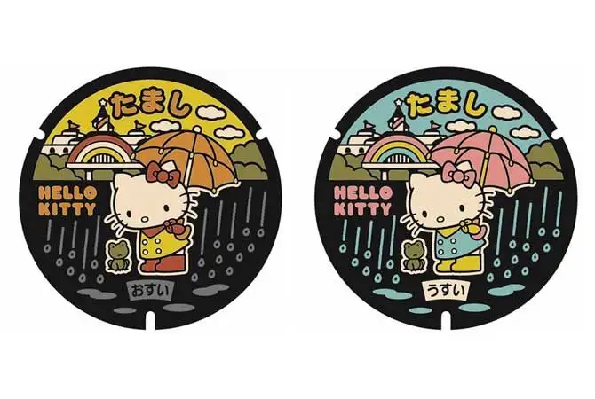
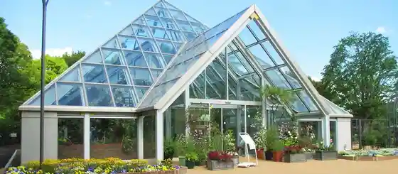
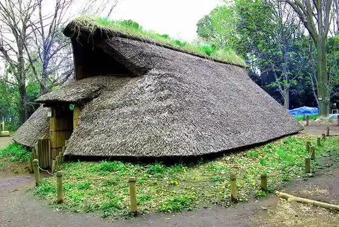
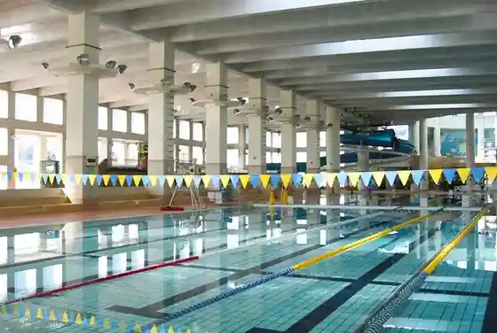

Tama, Tokyo: things to do, food and stays
Tama · Tokyo
Tama
Highlighted on the Tokyo map.

Sights
Harokiteimanhoru Futa
Kokoria Tama Center
Tama Ritsu Green Live Center

Tokyo Metropolitan Buried Cultural Properties Center

Akuaburu Tama

Kyu Tama Seiseki Memorial Museum
Tama Yokoyama Road
Sanriopyuro Land
Sakuragaoka Park
Rasukarumanhoru Futa
Harokitei Toshimajiro no Monyumento
Dining
Tama Ya
たま家

Noodle restaurant in Tama, Tokyo.
LE JARDIN BLEU
ル・ジャルダン・ブルー

Cafe in Tama, Tokyo.
Sugoi Niboshi Ramen Nagi Tama senta ten
すごい煮干ラーメン 凪 多摩センター店

Noodle restaurant in Tama, Tokyo.
Canadian Coffee Shop
カナディアン コーヒーショップ

Cafe in Tama, Tokyo.
Kodaira Udon Seiseki sakuragaoka
小平うどん 聖蹟桜ヶ丘

Noodle restaurant in Tama, Tokyo.
Jidori to Kinmedai Chuka Soba Uguisu
地鶏と金目鯛 中華そば 鶯

Noodle restaurant in Tama, Tokyo.
PASTA HOUSE AWkitchen FARM Tama senta ten Reservation
PASTA HOUSE AWkitchen FARM 多摩センター店

European restaurant in Tama, Tokyo.
Kamo to Ise Ebi Chuka Soba Shishi
鴨と伊勢海老 中華そば 獅

Noodle restaurant in Tama, Tokyo.
le poupelin
ル・ププラン

Sweets and bakery shop in Tama, Tokyo.
Kyo Ya Yoshi
蕎家 佳

Noodle restaurant in Tama, Tokyo.
Okura Chinese Restaurant Tori Reservation
オークラチャイニーズレストラン 桃里

Chinese or Asian restaurant in Tama, Tokyo.
Hugsy Doughnuts
HUGSY DOUGHNUT

Sweets and bakery shop in Tama, Tokyo.
Ramen Nagatomi
麺屋 ながとみ

Noodle restaurant in Tama, Tokyo.
Daimon
大門

Noodle restaurant in Tama, Tokyo.
GINZA France-ya Seiseki sakuragaoka ten Reservation
銀座フランス屋 聖蹟桜ヶ丘店

Cafe in Tama, Tokyo.
Mikasa Kaikan Seiseki Tei Reservation
三笠会館 聖せき亭

Meat restaurant in Tama, Tokyo.
44APARTMENT Tama senta ten
44APARTMENT 多摩センター店

Cafe in Tama, Tokyo.
Shunsen Takuma
旬鮮たくま

Noodle restaurant in Tama, Tokyo.
Sankyūsan
三九三

Meat restaurant in Tama, Tokyo.
Menbu Shibamori
麺部しば盛

Noodle restaurant in Tama, Tokyo.
Un Beshito Nagayama ten
ウン・ベシート 永山店

European restaurant in Tama, Tokyo.
GYUTON

Noodle restaurant in Tama, Tokyo.
Yakiniku Tajimaya Tama senta ten Reservation
焼肉 但馬屋 多摩センター店

Meat restaurant in Tama, Tokyo.
Yasaiya Wada ten
831家 和田店

Noodle restaurant in Tama, Tokyo.
Sun Coffee Reservation
サンコーヒー

Cafe in Tama, Tokyo.
Tama Udon Ponpoko
多摩うどん ぽんぽこ

Noodle restaurant in Tama, Tokyo.
PARLOR
パーラー

Cafe in Tama, Tokyo.
UBRIACO
ウブリアーコ

European restaurant in Tama, Tokyo.
Madre Herb to Spice Ryori no Wine Shokudo
Madre ハーブとスパイス料理のワイン食堂

European restaurant in Tama, Tokyo.
Hyakujitsukou
百日紅

Chinese or Asian restaurant in Tama, Tokyo.
Charm
シャルム

Restaurant in Tama, Tokyo.
Nagasaki Ramen Saikai Seimenjo Tama senta- ten
長崎らーめん 西海製麺所 多摩センター店

Noodle restaurant in Tama, Tokyo.
Namaste Kitchen Reservation
ナマステキッチン

Chinese or Asian restaurant in Tama, Tokyo.
Rainbow World Restaurant
レインボーワールドレストラン

Restaurant in Tama, Tokyo.
Izakaya Santa
居酒屋 三太

European restaurant in Tama, Tokyo.
balder coffee

Cafe in Tama, Tokyo.